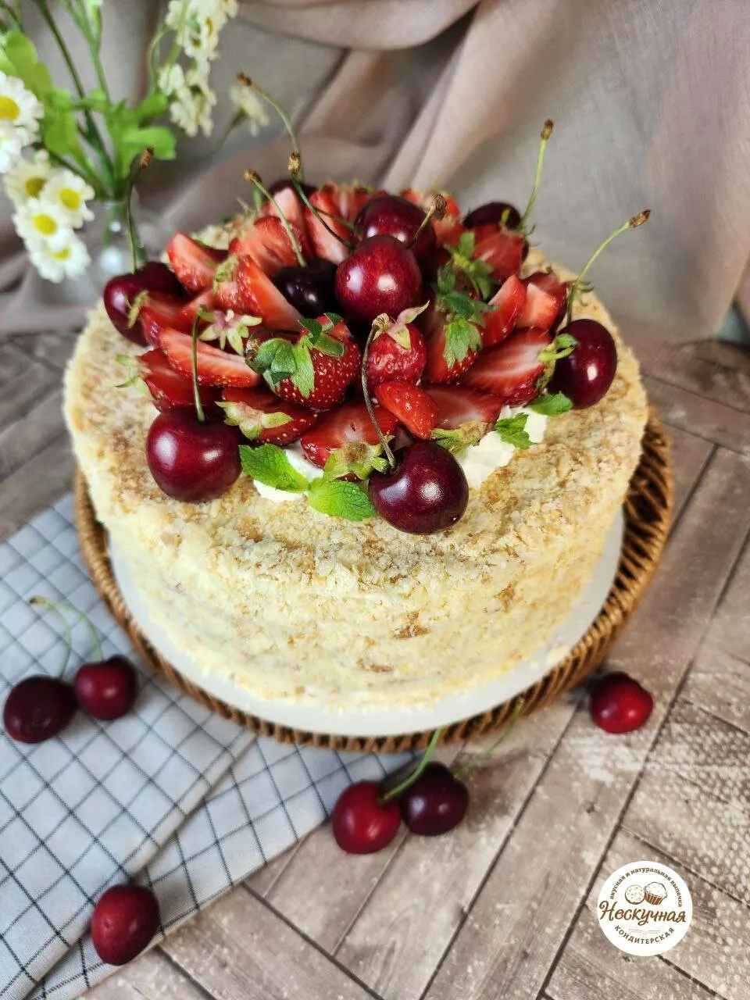
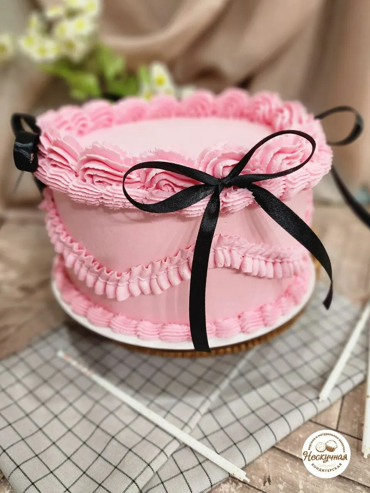
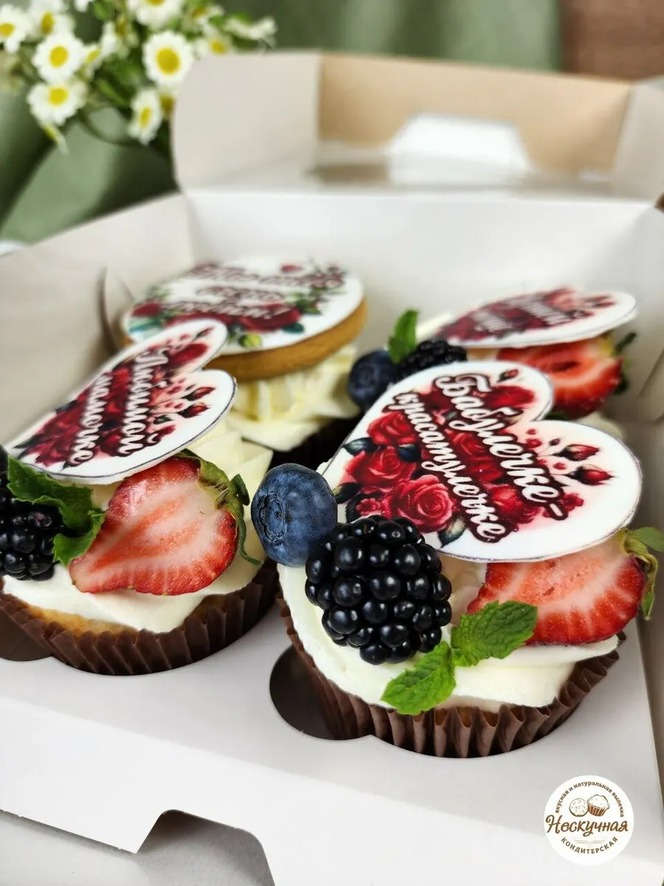
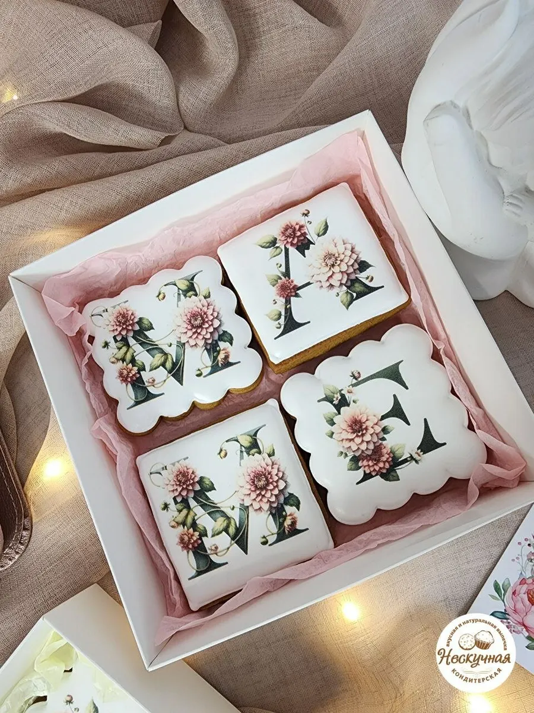

Кондитерская на Владимира Невского, 25/2
Торты, пряники и десерты на заказ в Воронеже
Торты на день рождения, бенто, капкейки, расписные пряники и наборы сладостей. Самовывоз и доставка, заказ по предварительной записи.

- 4,9 на Яндекс.Картах, 20 оценок
- Расписные пряники и торты на заказ
- Самовывоз и доставка
Что у нас можно заказать
Цену называем при заказе: она зависит от начинки, размера и оформления.
Торты
- Торт на заказдетские, на день рождения, праздничныеуточнить
- Бенто-тортнапример, красный бархатуточнить
- Торт «Молочная девочка»уточнить
Десерты и пряники
- Капкейкиуточнить
- Расписные пряникияблоки, матрёшки, богатыри, новогодниеуточнить
- Наборы сладостейподарочныеуточнить
- Куличитворожные, к Пасхеуточнить
Как заказать торт
- 01
Повод и дата
Напишите в Telegram или позвоните: скажите, к какому дню нужен торт.
- 02
Начинка и дизайн
Опишите задумку и пришлите пример. Кондитер поможет выбрать вкус.
- 03
Самовывоз или доставка
Заберите заказ на Владимира Невского, 25/2 или договоритесь о доставке.



Что пишут клиенты
Точно по запросу
«Выполнено все было точно по запросам», пишет Ирина Соловьева.
Доставка с открыткой
«Привезли домой, как и договаривались, красивый, хорошо упакован, с открыточкой праздничной», пишет Татьяна Бухтоярова.
Пряники по задумке
«Они получились яркие, вкусные и на вид точно такие, как были нужны», пишет Анастасия Мещерякова.
Свежее и разное
«Всегда все самое свежее, безумно вкусно, разнообразие в выборе просто огромное», пишет Дудина.
Отзывы с Яндекс.Карт
«На день рождение дочки заказывали тортик и остались очень довольны 😊 выполнено все было точно по запросам. вкус, красота все на высшем уровне, а главное свежие, натуральные продукты. Юле доверяем и будем обращаться ещё ❤️»
Ирина Соловьева · 26 марта
«Очень вкусный тортик был на мой день рождения. Привезли домой, как и договаривались, красивый, хорошо упакован, с открыточкой праздничной. Понравился и взрослым и детям. Деже кот ел))»
Татьяна Бухтоярова · 17 марта
«Добрый день! В кондитерской я заказывала пряники в виде богатырей. Они получились яркие, вкусные и на вид точно такие, как были нужны. Хочу поблагодарить Юлию за оперативность, внимание к деталям и качество работы. Желаю успехов!»
Анастасия Мещерякова · 26 марта
Отзывы с карточки на Яндекс.Картах, без правок.
Контакты
- Адрес
- улица Владимира Невского, 25/2, Воронеж
- Часы
- по предварительной записи
- Телефон
- +7 (920) 432-02-20